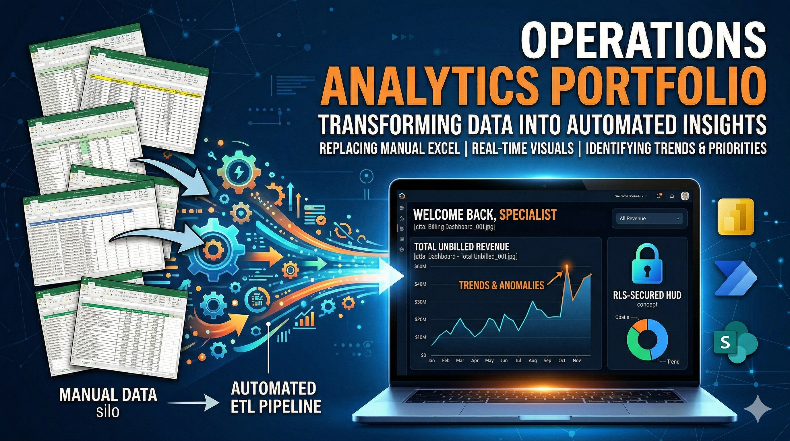

Analytics Portfolio
Operations Analytics Portfolio
Portfolio of reporting, dashboarding, and operational analytics work focused on billing performance, adjustment analysis, workflow visibility, and data-driven process improvement.
This repository is positioned as the analytics-focused segment of the broader portfolio, highlighting dashboard design, KPI visibility, operational reporting, and analytical problem framing across billing and workflow environments.
Business Context
Business Issues Addressed
The analytics work in this portfolio was developed to improve visibility into operational performance, reduce reliance on manual tracking, and support more consistent decision-making in billing and workflow environments.
Primary Business Issues
- Limited real-time visibility into billing performance, adjustments, and production drivers
- Heavy reliance on manual spreadsheets and static reporting for operational monitoring
- Difficulty identifying exception patterns, backlog trends, and adjustment activity efficiently
- Inconsistent access to decision-ready metrics across teams and leadership stakeholders
Operational Consequences
- Delayed insight into emerging issues affecting billing outcomes and workflow performance
- Higher manual effort required to prepare recurring status views and reporting outputs
- Reduced ability to standardize performance monitoring across operational processes
- Lower confidence in fast decision-making without consolidated dashboard visibility
Analytics Design
Portfolio Architecture
The repository is structured around dashboards and reporting artifacts that convert raw operational data into more accessible views for analysis, variance identification, and management visibility.
Analytical Direction
The work emphasizes practical operations analytics: reporting on billing behavior, surfacing performance trends, and improving visibility into high-volume administrative environments through structured dashboard outputs.
- Dashboard-driven operational visibility
- Exception and variance-oriented reporting
- Billing and adjustment analysis
- Performance-focused data presentation
Tooling and Delivery
Built primarily around Power BI and related data preparation workflows to support accessible, repeatable reporting aligned to operational review, issue identification, and process improvement initiatives.
Capability Areas
Analytics Capabilities
The portfolio emphasizes dashboard-based analysis, reporting clarity, and stronger operational insight across billing and workflow processes.
KPI Dashboarding
Built visual reporting artifacts designed to make operational metrics easier to monitor and act upon.
Exception Visibility
Surfaced patterns in adjustments, billing activity, and workflow variance through structured reporting views.
Operational Decision Support
Translated complex data activity into clearer dashboard outputs for analysts, managers, and leadership stakeholders.
Reporting Standardization
Supported more repeatable review processes by consolidating information into consistent analytical artifacts.
Dashboard Gallery
Featured Analytics Artifacts
Representative dashboard mockups and reporting visuals from the repository are displayed below to demonstrate analytical presentation, operational monitoring, and reporting structure.

Invoice Adjustments Dashboard — Summary View
High-level visibility into adjustment activity, patterns, and operational totals.

Invoice Adjustments Dashboard — Detail View
Detailed breakdown supporting deeper review of adjustment records and underlying activity.

Personalized Billing Operations Dashboard
Operational dashboarding tailored for billing workflow visibility and performance monitoring.

Unbilled Revenue Dashboard
Reporting view designed to support backlog visibility and unbilled production monitoring.
Portfolio Value
Impact
The value of this portfolio lies in demonstrating the ability to translate operational complexity into clearer analytical views that support reporting consistency, monitoring, and business decision-making.
Analytical Outcomes
- Improved visibility into billing, adjustment, and unbilled workflow activity
- Reduced dependence on fragmented manual reporting methods
- Provided clearer KPI views for ongoing operational review
Business Outcomes
- Supported faster interpretation of performance trends and exception patterns
- Improved accessibility of operational data for decision-makers
- Strengthened the case for more structured reporting and analytics adoption
Project Navigation
Source and Portfolio Links
Move to the broader portfolio or review the full repository directly.
Main Portfolio
Return to the primary portfolio landing page.
Source Repository
Review the repository and supporting dashboard materials directly on GitHub.